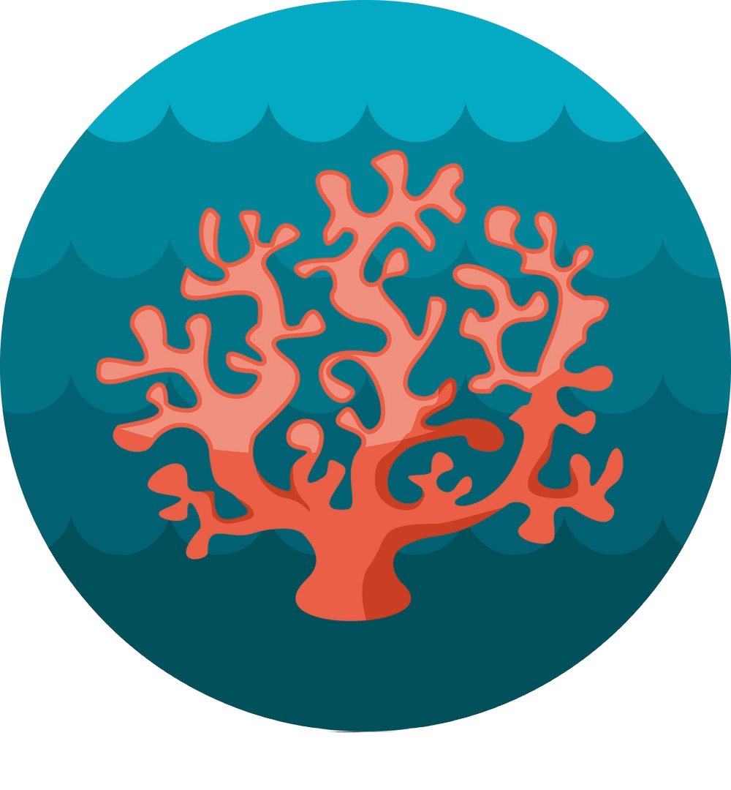

CORAL REEF DETECTION AND ANALYSIS

- Developed robust U-Net architecture-based classification models for accurate coral identification.
- Engineered semantic segmentation models to generate precise coral masks.
- Pioneered classification models using Vision Transformers, achieving exceptional accuracy.
- Utilized YOLO v5 for object detection, enabling precise identification of coral types.
- Implemented Watershed algorithm for efficient coral count estimation.
- Streamlined data processing pipeline by patching mosaic images into 256x256 patches.
- Applied pixel segmentation for refined masks, enabling clear classification distinctions.
- Leveraged U-Net architecture with resnet34 backbone for optimal image feature extraction.
- Utilized visual transformers for revolutionary image classification, exploiting positional embeddings.
- Expertly harnessed YOLO v5 for object detection with multi-layered architecture and self-attention blocks.
- Attained accuracy of 90.12% for U-Net classification model, enhanced to 99.7% considering detected corals.
- Achieved a mean IoU of 0.73 with semantic segmentation for accurate coral mask generation.
- Demonstrated feasibility of consistent coral measurements with auto-generated mask mosaics.
- Optimized YOLO object detection performance, with precision and recall scores of 0.78 and 0.81.
- Utilized Watershed algorithm for coral counting with an impressive 30% approximation accuracy.
- Collaborated seamlessly within a dedicated team to ensure accurate implementation.
- .
- .